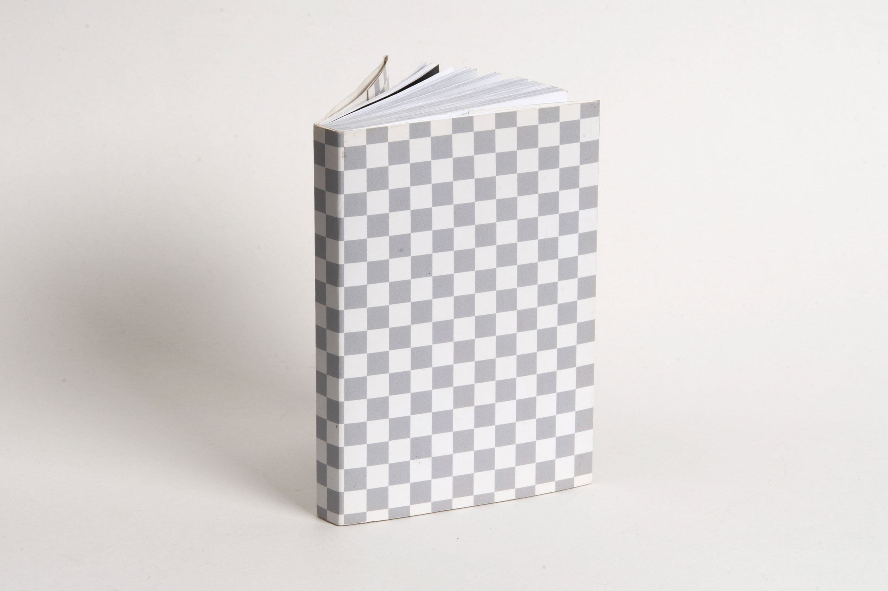

It’s skin of something
'It’s skin of something'은 3D 프로그램을 사용해 임의의 그래픽 이미지를 생성하고 이를 책, 웹사이트, 설치 등의 다양한 방식으로 아카이빙한 실험적 프로젝트입니다.
이 그래픽 이미지들은 3D 프로그램에서 텍스쳐를 생성하는 기능인 노드 시스템을 사용하여 제작되었습니다. 노드 시스템 속에서 임의로 값을 조정하고 새롭게 연결해 나가면서 다양한 텍스쳐 70종을 생산했습니다.
이 이미지들은 3D 프로그램 내에서 오브젝트를 감싸는 ‘텍스쳐’를 생성하는 기능으로 제작되었기 때문에 이 이미지가 실제로도 무언가를 감싸는 역할을 하는 텍스쳐, 즉 사물의 피부가 된다면 흥미로울 것 같다고 생각했습니다.
따라서 이 그래픽이 실제로 무언가를 감싸며, 사물의 피부가 될 수 있도록 다양한 장치를 설계했습니다.
'Its skin of something' is an experimental project that uses a 3D program to create random graphic images and archive them in various ways, such as books, websites, and installations. These graphic images were created using a node system, which is a function that creates textures in a 3D program. By arbitrarily adjusting the values and connecting them using the node, 70 different types of textures were produced. I thought it would be interesting if the images could be the texture or skin of objects, that actually surrounds something, because these images were created with the ability to create a 'texture' that surrounds an object within a 3D program. Therefore, I designed various things so that this graphic actually wraps around something and becomes the skin of objects.
'Its skin of something' is an experimental project that uses a 3D program to create random graphic images and archive them in various ways, such as books, websites, and installations. These graphic images were created using a node system, which is a function that creates textures in a 3D program. By arbitrarily adjusting the values and connecting them using the node, 70 different types of textures were produced. I thought it would be interesting if the images could be the texture or skin of objects, that actually surrounds something, because these images were created with the ability to create a 'texture' that surrounds an object within a 3D program. Therefore, I designed various things so that this graphic actually wraps around something and becomes the skin of objects.